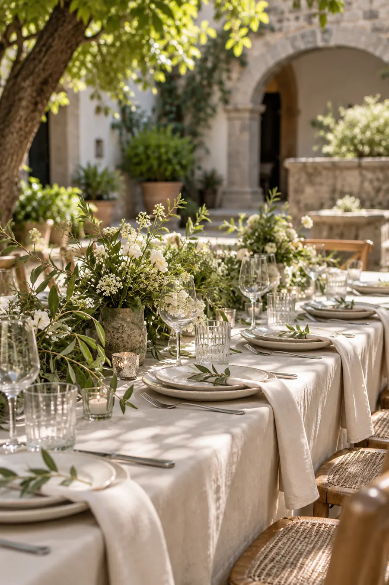
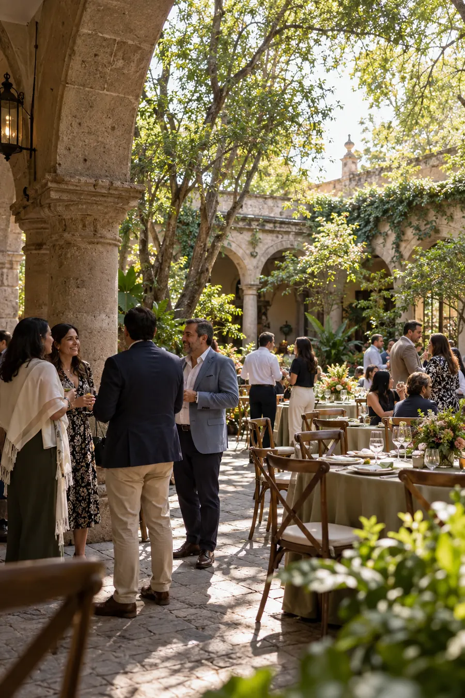

Veinticinco años no se cumplen solos. Se cumplen con la gente que se quedó.
El camino
Cómo llegamos aquí
2002
Un despacho de tresUn local prestado en la colonia Juárez
2011
El primer proyecto grandeY el primer equipo de verdad
2019
La casa propiaNos mudamos al patio donde hoy comemos
2027
Sesenta personasY las mismas ganas del primer día

La comida
Los datos
Cuándo
Viernes 17 de septiembreDe 2:00 a 7:00 de la tardeDónde
Patio de Casa VereaZacatecas 88, Roma Norte, CDMXVestimenta
Casual de oficinaEl patio es de piedra; hay sombra
El patio de siempre
Bajo los mismos árboles donde empezó todo
La tarde
Cómo va
- 2:00 pmBienvenida en el patio
- 2:45 pmComida
- 4:30 pmBrindis y unas palabras
- 5:00 pmCafé, postre y sobremesa
Confirmación
¿Nos acompañas?
Confírmanos antes del 3 de septiembre para apartar tu lugar en la mesa.
 Hecho por Savey
Hecho por Savey